Passo a passo de todas as funções da plataforma Acorly: cadastrar devedores e dívidas, cobrar com a sua equipe, encaminhar à equipe Acorly, negociar, confirmar pagamentos e acompanhar os resultados.
Para quem é: administradores, equipe financeira e demais usuários das empresas clientes da Acorly.
Acesso:acorly.com.br, pelo navegador do computador ou do celular. Não é preciso instalar nada.
Versão de novembro de 2026. As imagens usam dados fictícios de exemplo. Acorly é uma plataforma da HS Recuperação de Crédito, CNPJ 37.573.934/0001-22.
Sumário
Como a Acorly funciona
Primeiro acesso: criar a conta e cadastrar a empresa
Entrar, senha e segurança
Conhecendo a tela: menu, avisos e perfis
Dashboard
Clientes e devedores
Dívidas
Parcelas
Importar planilha
Cobrar com a sua equipe (cobrança própria)
Central de mensagens
Negociar e formalizar acordos
Cobrança pela equipe Acorly: contrato e comissão
Carteiras
Encaminhar dívidas à Acorly
Acompanhar as Cobranças Acorly e aprovar propostas
Pagamentos: registrar, conferir e confirmar
Relatórios e prestação de contas
Usuários da sua empresa
Assinatura e planos
Configurações
Regras de cobrança respeitosa e LGPD
Dúvidas frequentes e atendimento
1
Como a Acorly funciona
A Acorly organiza a recuperação dos valores que seus clientes devem à sua empresa. Você pode usar de duas formas, ou das duas ao mesmo tempo:
A. Plataforma (cobrança própria) A sua equipe cobra pelo sistema: cadastra as dívidas, envia mensagens prontas por WhatsApp e e-mail, negocia, formaliza acordos e confirma os pagamentos. Você paga só a assinatura mensal, sem comissão sobre o que recuperar.
B. Cobrança gerenciada (equipe Acorly) Você encaminha as dívidas e a equipe Acorly faz os contatos e as negociações em nome da sua empresa, dentro dos limites que você autorizar. Você paga uma comissão apenas sobre o que for efetivamente recebido. Exige um contrato próprio.
Três regras que valem sempre:
O dinheiro vai direto para a sua empresa. O devedor paga pelo seu Pix, boleto ou conta. A Acorly nunca recebe valores de devedores.
Só conta como recuperado o que você confirma. Propostas e acordos aparecem separados; o saldo da dívida só diminui quando você confirma o pagamento.
Cobrança respeitosa. As mensagens saem com o nome da sua empresa, sem ameaças e sem expor ninguém, dentro do Código de Defesa do Consumidor e da LGPD.
O caminho de uma dívida, em resumo
Cadastre o devedor e a dívida (um a um ou por planilha).
Escolha quem cobra:Iniciar cobrança própria (sua equipe) ou Encaminhar ao Acorly (equipe Acorly).
Contate e negocie: mensagens, simulador de desconto e parcelas, proposta e acordo.
Confirme o pagamento quando o dinheiro entrar na sua conta.
Acompanhe no Dashboard e nos Relatórios.
2
Primeiro acesso: criar a conta e cadastrar a empresa
2.1 Criar a sua conta
Acesse acorly.com.br e clique em Criar conta, no topo da página.
Preencha Seu nome, E-mail e Senha (mínimo de 8 caracteres, com letras e números).
Clique em Criar conta. Se o sistema pedir, informe o código de 6 dígitos enviado ao seu e-mail (confira também a caixa de spam).
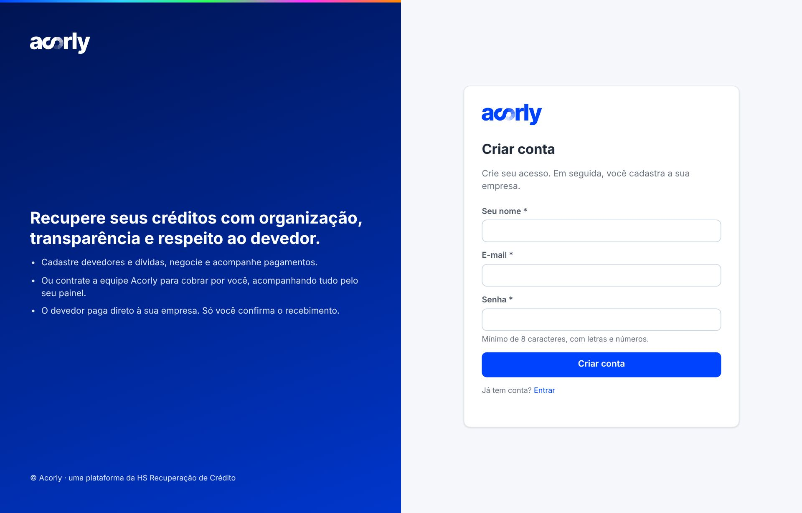
Tela de criação de conta.
2.2 Cadastrar a empresa
Logo após criar a conta, o sistema pede os dados da empresa:
Obrigatórios: razão social, CNPJ, e-mail da empresa, telefone, responsável legal, endereço completo e o seu nome como administrador da conta.
Opcionais: nome fantasia e um contato (nome, telefone e e-mail).
Marque "Li e aceito os Termos de Uso" e "Li e aceito a Política de Privacidade".
O nome fantasia é o nome que aparece nas mensagens enviadas aos seus devedores. Use o nome pelo qual seus clientes conhecem a sua empresa.
2.3 Escolher como quer usar a Acorly
Em seguida, escolha uma das opções (você pode mudar depois em Configurações → Serviço):
A. Quero utilizar a plataforma: sua equipe cobra pelo sistema.
B. Quero contratar a cobrança do Acorly: a equipe Acorly cobra por você.
Quero os dois: parte das dívidas você cobra; outra parte você encaminha à Acorly.
2.4 Teste grátis e validação
A plataforma pode ser usada grátis por 7 dias, sem cartão, com até 20 devedores e 3 usuários.
Para a cobrança gerenciada, a Acorly valida os dados da empresa antes de liberar o encaminhamento. A situação do cadastro aparece na tela inicial.
Ao final do teste, escolha um plano em Assinatura (capítulo 20). Sem plano, os dados ficam disponíveis apenas para consulta.
3
Entrar, senha e segurança
3.1 Entrar
Em acorly.com.br, clique em Entrar.
Informe o E-mail e a Senha e clique em Entrar.
Se a verificação em duas etapas estiver ativa, informe o código do aplicativo autenticador ou o código enviado ao seu e-mail.
3.2 Esqueci minha senha
Na tela de entrada, clique em Esqueci minha senha.
Informe o e-mail cadastrado. Você recebe um link para criar uma nova senha.
Se o e-mail não chegar, o administrador da sua empresa pode gerar um Link de acesso em Usuários (capítulo 19).
3.3 Minha conta: trocar a senha e ativar a verificação em duas etapas
Clique no seu nome, no canto superior direito, e depois em Minha conta.
Para trocar a senha: preencha a senha atual e a nova e clique em Alterar senha.
Para ativar a verificação em duas etapas: instale um aplicativo autenticador gratuito (Google Authenticator, Microsoft Authenticator, Authy), leia o QR Code exibido e digite o código de 6 dígitos para confirmar.
Recomendamos ativar a verificação em duas etapas para todos os usuários: além da senha, o acesso pede um código que muda a cada 30 segundos no seu celular.
3.4 Sair
Clique em Sair, no canto superior direito. Em computadores compartilhados, sempre saia ao terminar.
4
Conhecendo a tela: menu, avisos e perfis
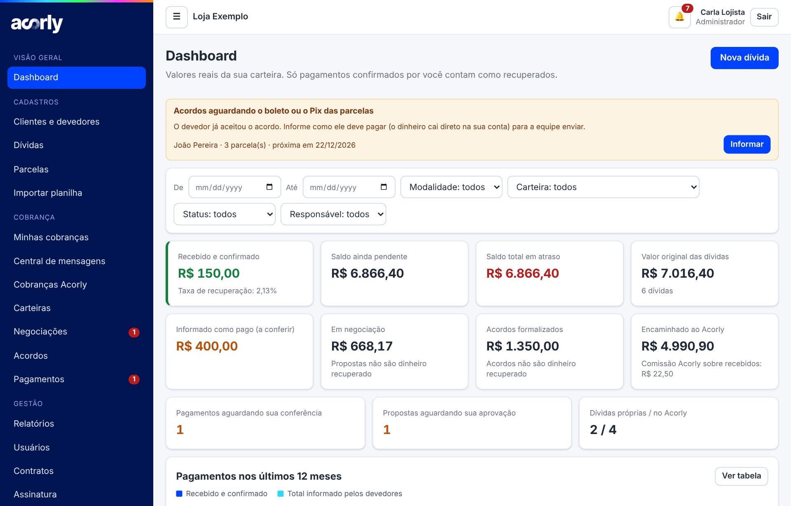
Tela inicial (Dashboard), com o menu à esquerda e os avisos no sino, no topo.
4.1 O menu lateral
Seção
Itens
Visão geral
Dashboard
Cadastros
Clientes e devedores · Dívidas · Parcelas · Importar planilha
Cobrança
Minhas cobranças · Central de mensagens · Cobranças Acorly · Carteiras · Negociações · Acordos · Pagamentos
No celular, o menu abre pelo botão ☰, no canto superior esquerdo. Os números em vermelho ao lado de Negociações e Pagamentos mostram quantos itens esperam por você.
4.2 Avisos (o sino)
O sino, no topo, mostra os avisos da sua conta: proposta aguardando aprovação, pagamento informado, cobrança atualizada, fatura da assinatura e outros. Clique no aviso para ir direto à tela correspondente.
4.3 Perfis de usuário
Perfil
O que pode fazer
Administrador
Tudo: cadastra devedores e dívidas, cobra, encaminha à Acorly, aprova propostas, confirma pagamentos, convida usuários, aceita contratos, gerencia a assinatura e as configurações.
Financeiro
Aprova ou rejeita propostas e confere e confirma pagamentos.
Visualizador
Apenas consulta as informações, sem alterar nada.
Alguns itens do menu só aparecem conforme o perfil e o plano contratado (por exemplo, Carteiras, Importar planilha e Relatórios estão nos planos Profissional ou superior).
5
Dashboard
O Dashboard mostra os valores reais da sua carteira. Só pagamentos confirmados por você contam como recuperados.
Indicadores: Recebido e confirmado, Saldo ainda pendente, Saldo total em atraso, Valor original das dívidas, Informado como pago (a conferir), Em negociação, Acordos formalizados e Encaminhado ao Acorly.
Período: use os campos De e Até para filtrar as datas.
Pagamentos nos últimos 12 meses: gráfico mês a mês. Clique em Ver tabela para ver os números.
Casos de cobrança por status: quantos estão em contato, negociando, em acordo, pagos etc.
Atalhos:Nova dívida e Informar (pagamento) levam direto às ações mais usadas.
6
Clientes e devedores
Aqui ficam as pessoas e empresas que têm valores em aberto com a sua empresa.
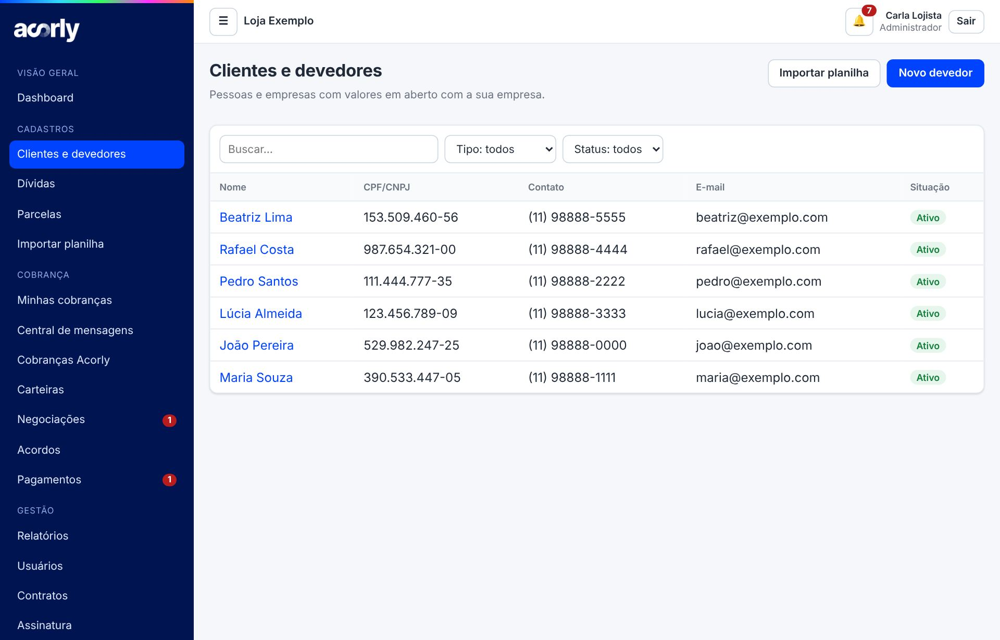
Lista de devedores, com busca e situação de cada um.
6.1 Cadastrar um devedor
Clique em Clientes e devedores e depois em Novo devedor.
Preencha os campos obrigatórios: Nome / razão social, Tipo de pessoa (física ou jurídica) e CPF/CNPJ.
Preencha os contatos: Telefone, WhatsApp, E-mail e o Canal preferido. Sem um contato, não é possível enviar mensagens.
Se quiser, informe o Endereço e Observações.
Clique em Salvar.
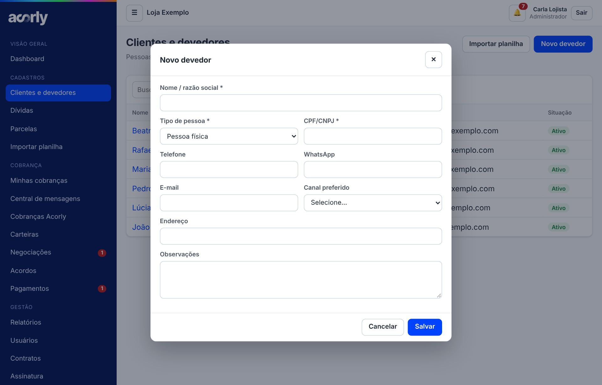
Formulário de novo devedor.
6.2 Consultar e editar
Clique no nome do devedor para ver os dados, as dívidas e o histórico de contatos. Na mesma tela você pode Editar os dados e, se o devedor pedir para não ser contatado, clicar em Registrar pedido de não contato: a partir daí, o sistema bloqueia novos contatos e o devedor aparece com a etiqueta Não contatar. Para voltar a contatar, use Liberar contato.
Para cadastrar muitos devedores de uma vez, use Importar planilha (capítulo 9).
7
Dívidas
Cada dívida mostra o valor original, o saldo atualizado e a situação. Use os filtros Vence de e até para localizar por vencimento.
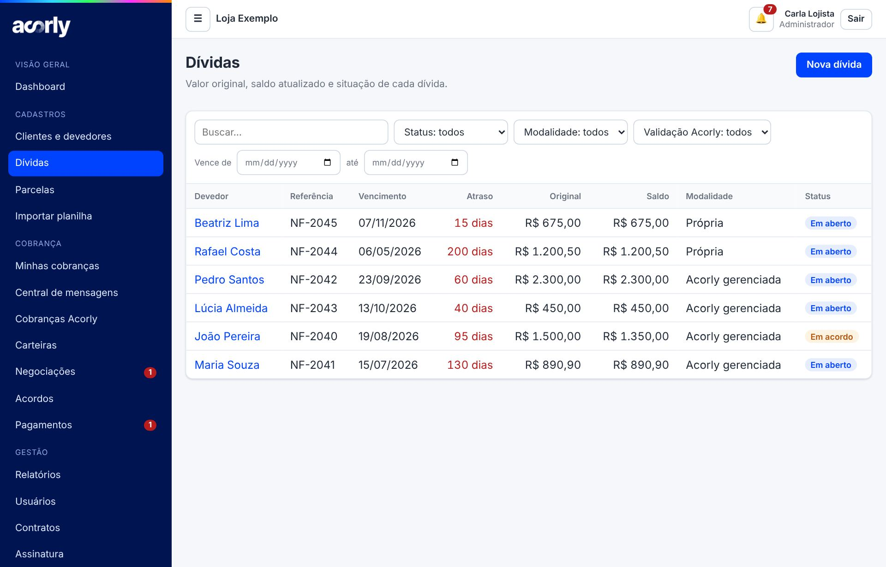
Lista de dívidas com atraso, saldo, modalidade e status.
7.1 Cadastrar uma dívida
Clique em Dívidas e depois em Nova dívida.
Escolha o Devedor (ele precisa estar cadastrado).
Informe a Descrição (ex.: "Mensalidade de março"), a Origem e o Documento de referência (nota, contrato, carnê).
Informe o Valor original, os Encargos contratuais (se houver) e o Vencimento.
Clique em Salvar.
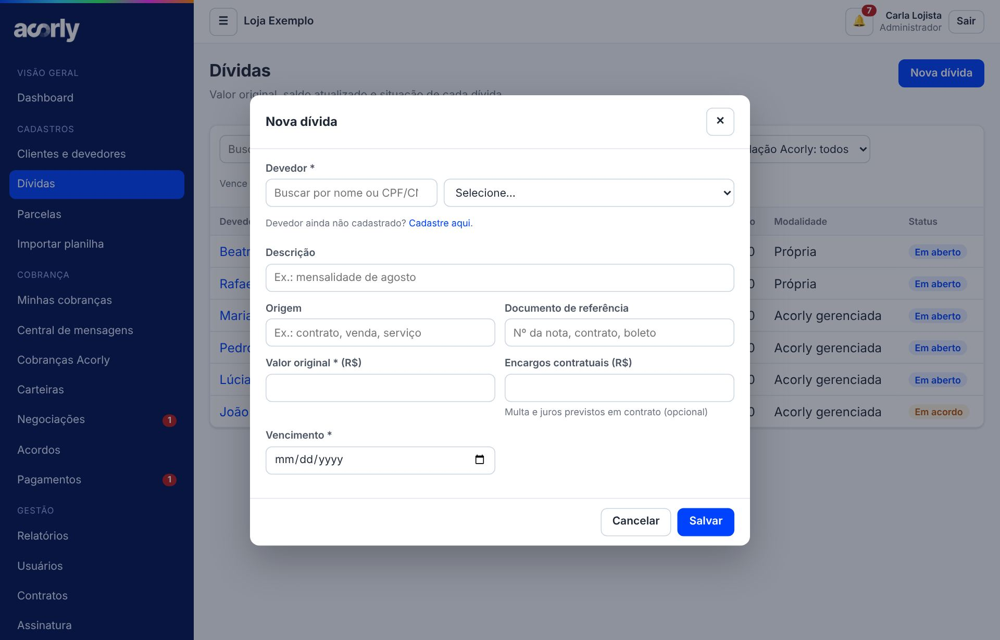
Formulário de nova dívida.
7.2 A tela da dívida
Clique em uma dívida para abrir o detalhe. No topo ficam as ações principais:
Botão
Para que serve
Editar
Corrigir os dados da dívida.
Registrar pagamento
Informar um valor que o devedor pagou (capítulo 17).
Iniciar cobrança própria
Abrir a cobrança pela sua equipe (capítulo 10).
Encaminhar ao Acorly
Enviar a dívida para a equipe Acorly cobrar (capítulo 15).
Ver tabela de comissão
Ver o percentual que valeria se a dívida fosse encaminhada hoje, conforme o tempo de atraso.
Retirar do Acorly
Aparece nas dívidas já encaminhadas: tira a dívida da cobrança gerenciada, conforme as regras do contrato.
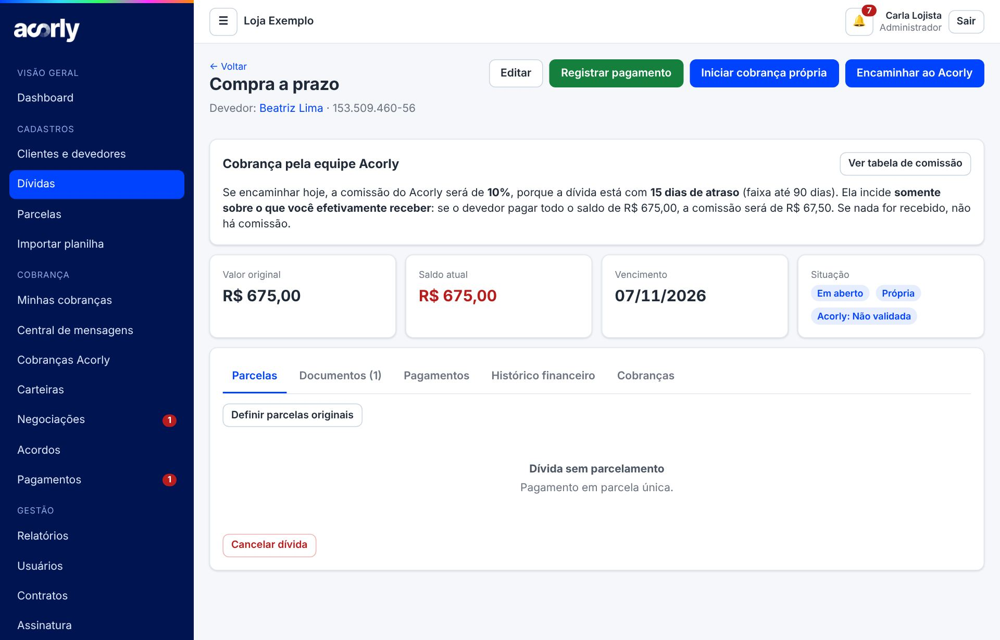
Detalhe da dívida: ações no topo, valores, situação e abas.
Abaixo dos valores ficam as abas:
Parcelas: se a dívida já era parcelada, clique em Definir parcelas originais e informe as parcelas e vencimentos.
Documentos: anexe nota, contrato ou comprovante da dívida. Os arquivos ficam privados e só abrem por link temporário.
Pagamentos: pagamentos informados e confirmados desta dívida.
Histórico financeiro: todas as mudanças de saldo, com data e responsável.
Cobranças: os casos de cobrança (própria ou Acorly) ligados a esta dívida.
Cancelar dívida (no fim da tela) serve para dívidas lançadas por engano ou perdoadas. Informe o motivo; a ação fica registrada.
8
Parcelas
Mostra, em ordem de vencimento, todas as parcelas: as originais (definidas na dívida) e as de acordos (criadas quando um acordo é formalizado). Para cada parcela você vê devedor, origem, número, vencimento, valor, saldo e status.
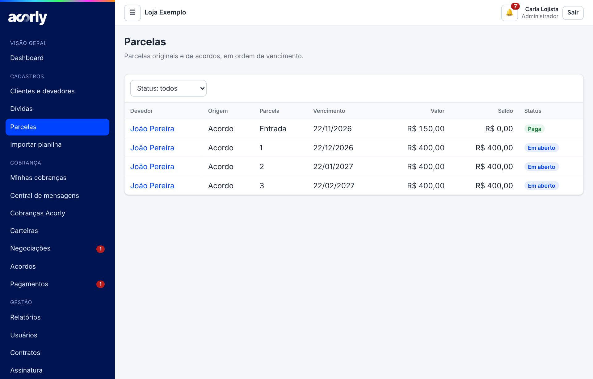
Lista de parcelas em ordem de vencimento.
Use esta tela no início de cada semana para ver as parcelas que vencem e lembrar os devedores antes do vencimento.
9
Importar planilha
Cadastre devedores e dívidas em lote a partir de um arquivo CSV.
Clique em Importar planilha e em Baixar modelo CSV.
Abra o modelo no Excel (ou outro programa de planilhas) e preencha uma linha por dívida, com os dados do devedor.
Salve como CSV (Arquivo → Salvar como → CSV).
Volte à tela, selecione o arquivo e confira a prévia: o sistema mostra as linhas com erro antes de importar.
Corrija o que for preciso e confirme a importação.
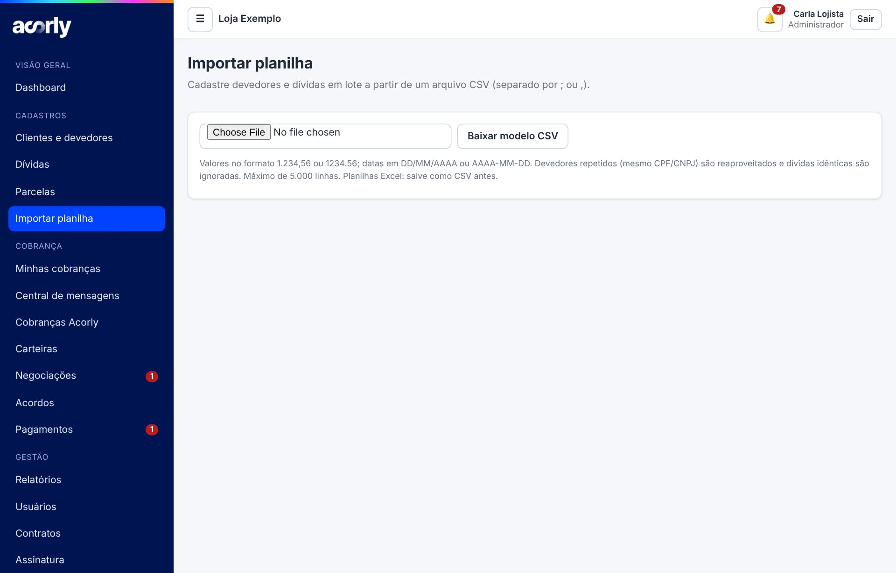
Tela de importação com o modelo para baixar.
Regras da planilha:
Valores no formato 1.234,56 ou 1234.56; datas em DD/MM/AAAA ou AAAA-MM-DD.
Separador ponto e vírgula (;) ou vírgula (,).
Devedores repetidos (mesmo CPF/CNPJ) são reaproveitados e dívidas idênticas são ignoradas.
Máximo de 5.000 linhas por arquivo. Planilhas do Excel precisam ser salvas como CSV antes.
10
Cobrar com a sua equipe (cobrança própria)
10.1 Abrir a cobrança
Abra a dívida (Dívidas → clique na dívida).
Clique em Iniciar cobrança própria. Um caso de cobrança é criado e aparece em Minhas cobranças.
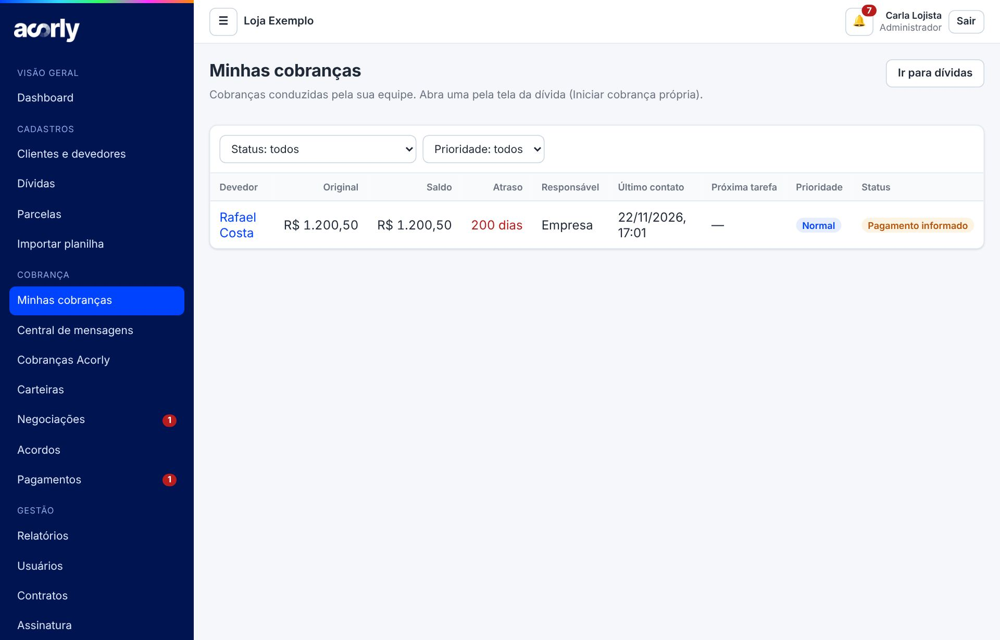
Minhas cobranças: casos conduzidos pela sua equipe, com responsável, último contato, próxima tarefa e status.
10.2 A tela do caso
Clique em um caso para abrir. No topo ficam os valores, o tempo de atraso e o último contato; à direita, os dados do devedor.
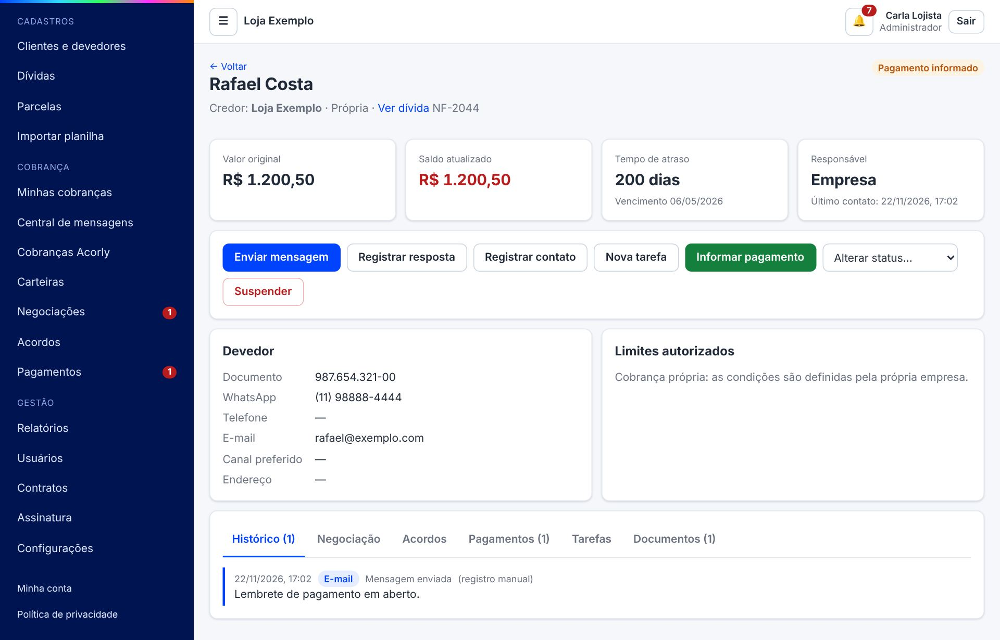
Tela do caso de cobrança, com as ações e as abas de histórico, negociação, acordos, pagamentos, tarefas e documentos.
Ação
Como usar
Enviar mensagem
Escolha WhatsApp ou E-mail, escolha um Modelo (Primeiro contato, Lembrete, Proposta de acordo, Lembrete de parcela do acordo) ou escreva uma mensagem livre. No WhatsApp, clique em Abrir no WhatsApp: o aplicativo abre com o texto pronto e você só aperta Enviar. O envio fica registrado no histórico.
Registrar resposta
Anote o que o devedor respondeu (por exemplo, "vai pagar dia 10").
Registrar contato
Registre uma ligação ou contato feito fora do sistema.
Nova tarefa
Agende um retorno (data e o que fazer). O caso volta para a Fila do dia nessa data.
Informar pagamento
Registre um pagamento recebido (capítulo 17).
Alterar status…
Em contato, Devedor respondeu, Em negociação, Sem sucesso ou Contestação.
Suspender
Pausa a cobrança (por exemplo, se o devedor contestar a dívida). Pode ser reativada depois.
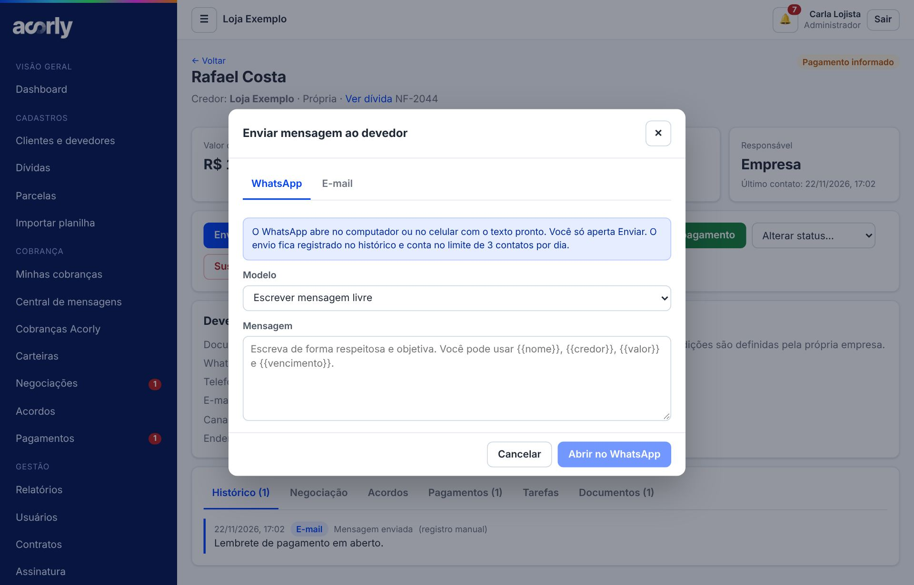
Enviar mensagem: escolha o canal e o modelo; o texto já vem preenchido com os dados do devedor.
O sistema limita a 3 contatos por dia por devedor, respeita o horário autorizado e bloqueia textos com ameaça ou exposição. Quem pediu para não ser contatado não recebe mensagens.
11
Central de mensagens
A Central reúne, em um só lugar, quem precisa ser contatado hoje e tudo o que já foi enviado e respondido.
Fila do dia: retornos agendados, parcelas de acordo vencendo, primeiro contato pendente e casos sem contato há 3 dias ou mais. Clique em cada item para enviar a mensagem.
Histórico: todas as mensagens enviadas e respostas registradas, com data, canal e responsável.
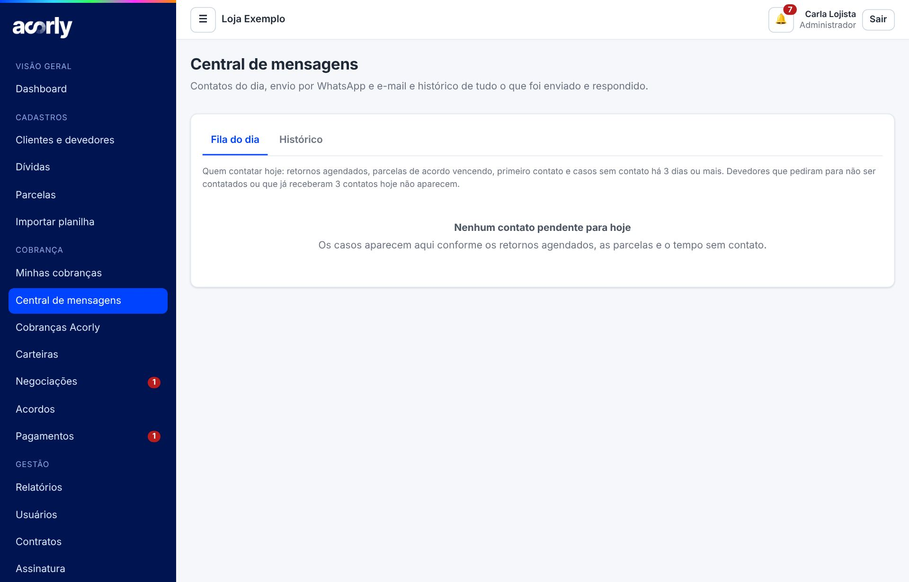
Central de mensagens com a Fila do dia e o Histórico.
Rotina sugerida: abra a Fila do dia todas as manhãs e trabalhe a lista de cima para baixo. Devedores que já receberam 3 contatos no dia ou pediram para não ser contatados não aparecem.
12
Negociar e formalizar acordos
12.1 Simular e propor
No caso de cobrança, abra a aba Negociação.
No Simulador de negociação, informe o Desconto (%), a Entrada (R$) e o Vencimento da entrada, o número de Parcelas e o 1º vencimento.
Confira as Condições da proposta: valor proposto, entrada e a tabela de parcelas com datas e valores.
Clique em Registrar proposta. Se ela estiver fora dos limites autorizados, use Enviar para aprovação do credor: ela segue para Negociações.
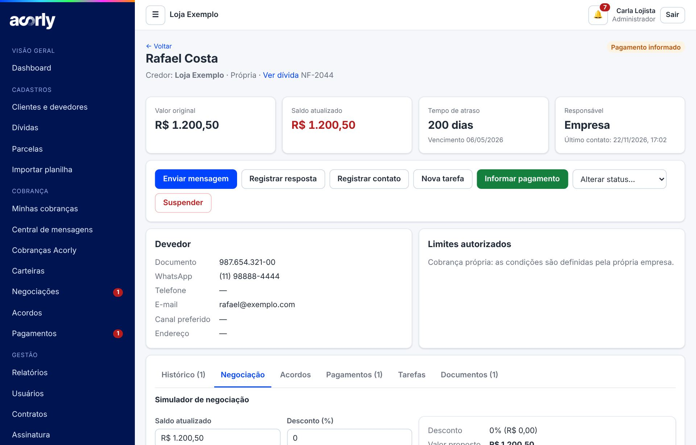
Simulador de negociação: desconto, entrada e parcelas calculados na hora.
12.2 Formalizar o acordo
Quando o devedor aceita, clique em Formalizar acordo. As parcelas do acordo passam a aparecer em Parcelas e na Fila do dia, perto do vencimento.
12.3 Acompanhar
Negociações: todas as propostas. A aba Aguardando minha aprovação mostra o que depende de você; use Aprovar ou Rejeitar.
Acordos: acordos formalizados com aceite, valor acordado, desconto, entrada, parcelas e status.
Proposta e acordo não são dinheiro recuperado. O saldo só cai quando você confirma cada pagamento.
13
Cobrança pela equipe Acorly: contrato e comissão
Para a equipe Acorly cobrar por você, é preciso ter um contrato de cobrança gerenciada aceito.
13.1 Aceitar o contrato
Quando a Acorly enviar uma proposta, você recebe um aviso. Abra Contratos.
Clique em Ver contrato e leia até o fim.
Marque a caixa de aceite e clique em Aceitar contrato. O aceite eletrônico vale como assinatura e fica registrado com nome, e-mail, data, hora e IP.
Se o botão estiver desativado, complete os dados da empresa em Configurações. O texto aceito fica guardado e pode ser consultado a qualquer momento em Ver contrato.
13.2 Piloto Sem Risco
Para conhecer o serviço, a Acorly oferece o Piloto Sem Risco: 30 dias, até 20 devedores escolhidos por você, comissão de 10% apenas sobre o que entrar nesse período; se nada entrar, você não paga nada. Depois dos 30 dias, se continuar, vale a tabela normal.
13.3 Como a comissão é calculada
Atraso da dívida no dia do encaminhamento
Comissão de referência
até 90 dias
10%
91 a 180 dias
15%
181 a 365 dias
20%
acima de 365 dias
25%
A comissão incide somente sobre o que você efetivamente receber e confirmar. Na tela de cada dívida, o quadro "Cobrança pela equipe Acorly" mostra o percentual e um exemplo em reais antes de você encaminhar. As condições finais ficam no seu contrato.
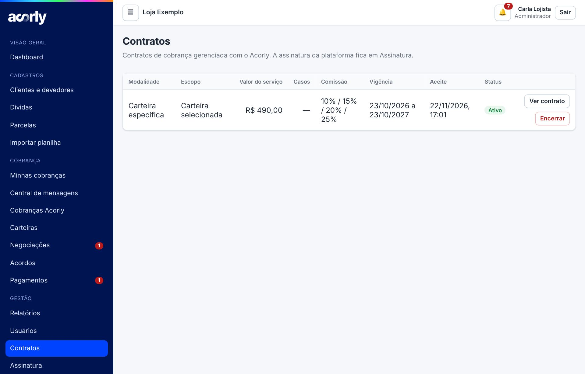
Contratos de cobrança gerenciada, com modalidade, comissão, vigência e status.14
Carteiras
Carteiras agrupam dívidas para organizar a cobrança ou encaminhar um lote de uma vez à Acorly (por exemplo, "Mensalidades 2025" ou "Ex-alunos").
Clique em Carteiras e em Nova carteira.
Informe o Nome, uma Descrição e o Uso previsto, e clique em Salvar.
Abra a carteira e adicione as dívidas desejadas.
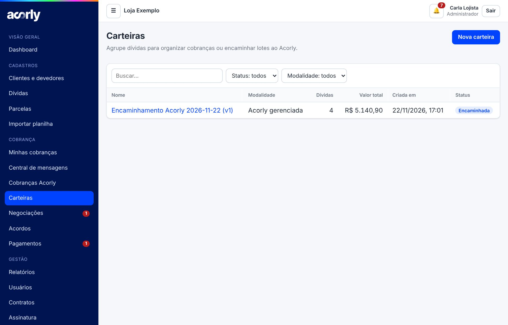
Lista de carteiras com quantidade de dívidas, valor total e status.15
Encaminhar dívidas à Acorly
Com o contrato aceito, o encaminhamento é feito em 4 etapas. Abra Cobranças Acorly e clique em Encaminhar ao Acorly (ou use o mesmo botão na tela de uma dívida).
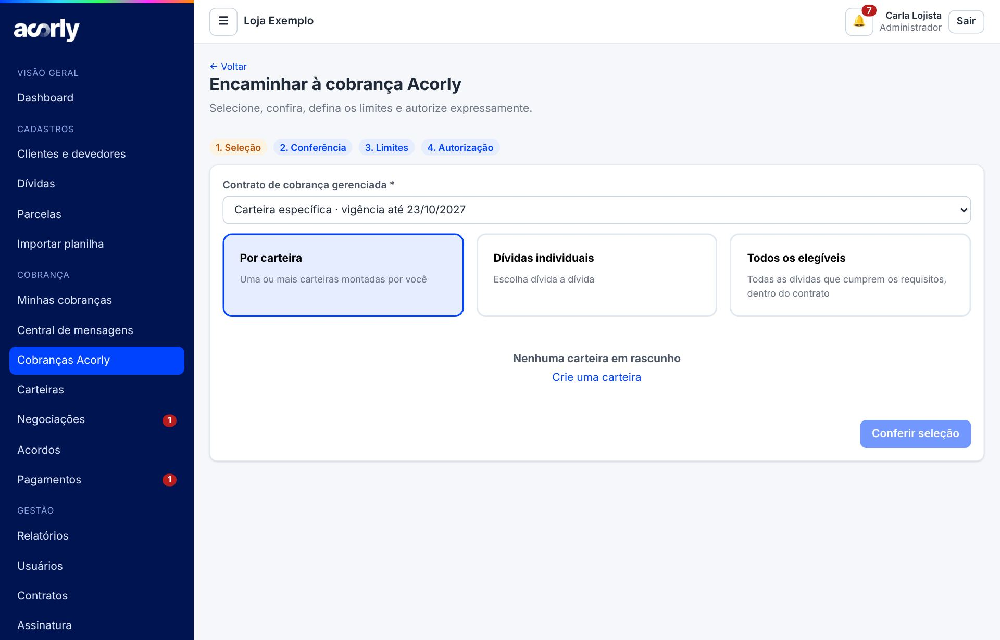
Encaminhamento: Seleção, Conferência, Limites e Autorização.
Seleção: escolha o Contrato de cobrança gerenciada e como selecionar: Por carteira, Dívidas individuais ou Todos os elegíveis (todas as dívidas que cumprem os requisitos do contrato). Clique em Conferir seleção.
Conferência: o sistema mostra quais dívidas podem ser encaminhadas e quais não podem, com o motivo (por exemplo, falta de contato ou de documento).
Limites: defina até onde a equipe Acorly pode negociar sem consultar você:
Desconto máximo (padrão 20%);
Parcelas máximas (padrão 6, com a entrada);
Entrada mínima (padrão 10%);
Janela de contato (padrão 08:00 às 20:00) e Canais autorizados (WhatsApp, telefone, e-mail);
opcional: "Toda proposta precisa da minha aprovação, mesmo dentro dos limites";
Condições e orientações para a equipe Acorly (texto livre).
Autorização: leia o resumo, marque "Li e autorizo expressamente, em nome da empresa, nos termos acima" e confirme.
Comece pelos clientes que já saíram ou pelas dívidas com mais de 90 dias: assim ninguém que ainda é seu cliente recebe contato no início, e você vê o resultado antes de encaminhar outros casos.
Depois do encaminhamento, a Acorly valida a carteira e define o operador responsável pela sua carteira, que acompanha todos os seus devedores do primeiro contato ao pagamento. A autorização pode ser consultada em Autorizações, na tela Cobranças Acorly.
16
Acompanhar as Cobranças Acorly e aprovar propostas
Em Cobranças Acorly você acompanha, em tempo real, cada caso encaminhado: responsável, último contato, próxima tarefa, prioridade e status.
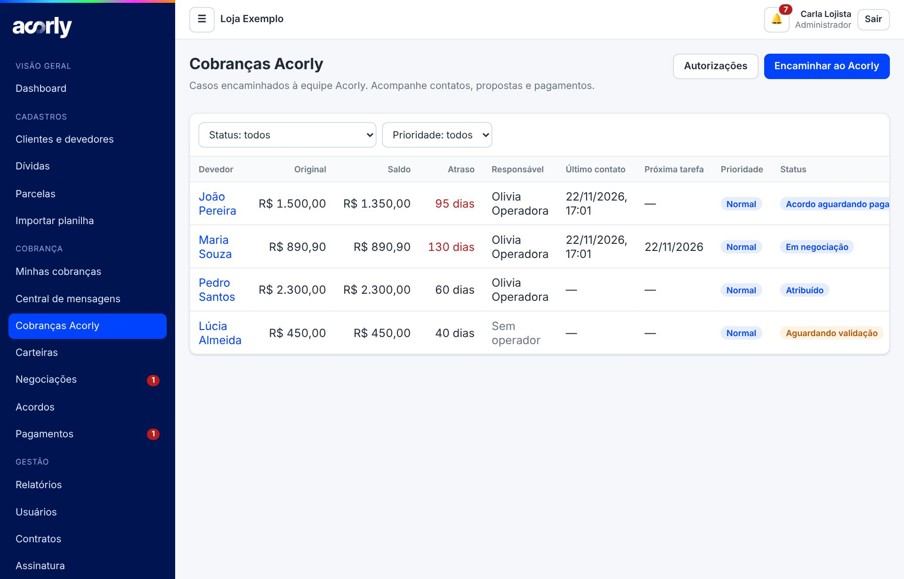
Cobranças Acorly: casos encaminhados à equipe Acorly.
Clique em um caso para ver o histórico de contatos, as propostas, os acordos e os pagamentos.
Quando a equipe Acorly fizer uma proposta fora dos limites (ou se você exigiu aprovar todas), você recebe um aviso. Abra Negociações → Aguardando minha aprovação e clique em Aprovar ou Rejeitar.
Se um cliente seu reclamar, avise a Acorly: o contato com ele é interrompido na hora.
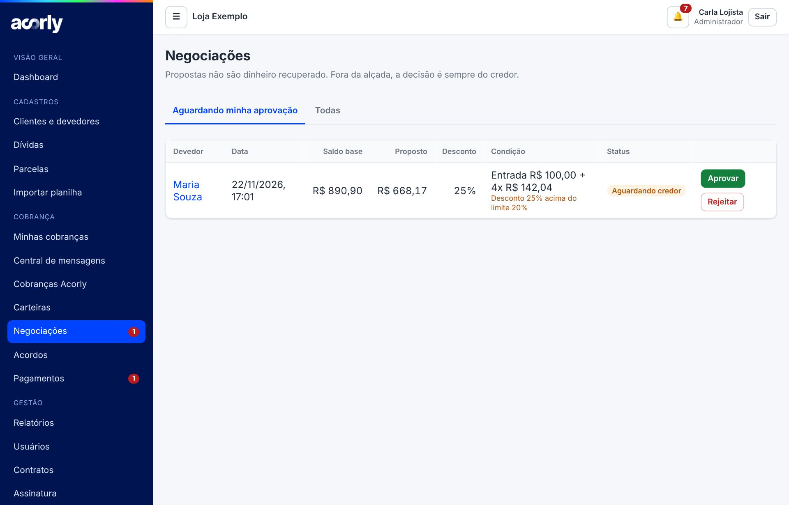
Negociações aguardando a sua aprovação.17
Pagamentos: registrar, conferir e confirmar
O devedor paga direto à sua empresa. O pagamento só entra como recuperado depois que você confere no extrato e confirma.
17.1 Registrar um pagamento
Abra a dívida e clique em Registrar pagamento (ou Informar pagamento na tela do caso).
Informe o Valor pago, a Data do pagamento e a Forma (Pix, Boleto, Transferência, Cartão, Dinheiro ou Outro).
Se tiver, informe o ID da transação (evita registrar o mesmo pagamento duas vezes) e anexe o comprovante.
Se já conferiu no extrato, marque "Já conferi no extrato: confirmar o recebimento agora".
Clique em Salvar.
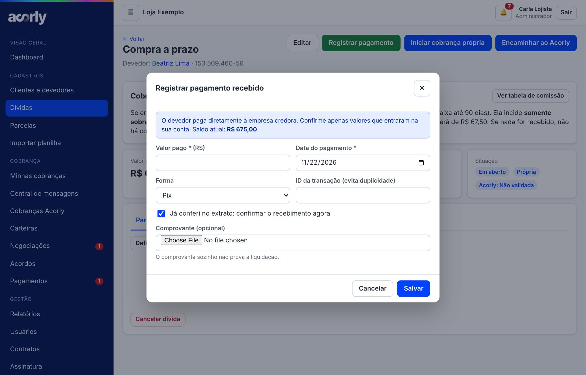
Registrar pagamento recebido.
17.2 Conferir os pagamentos informados
Quando a equipe Acorly (ou o devedor, pelo comprovante) informa um pagamento, ele aparece em Pagamentos → Informados.
Confira no extrato bancário se o valor entrou.
Clique em Confirmar (entrou) ou Rejeitar (não entrou). Use Conferir para marcar que está verificando.
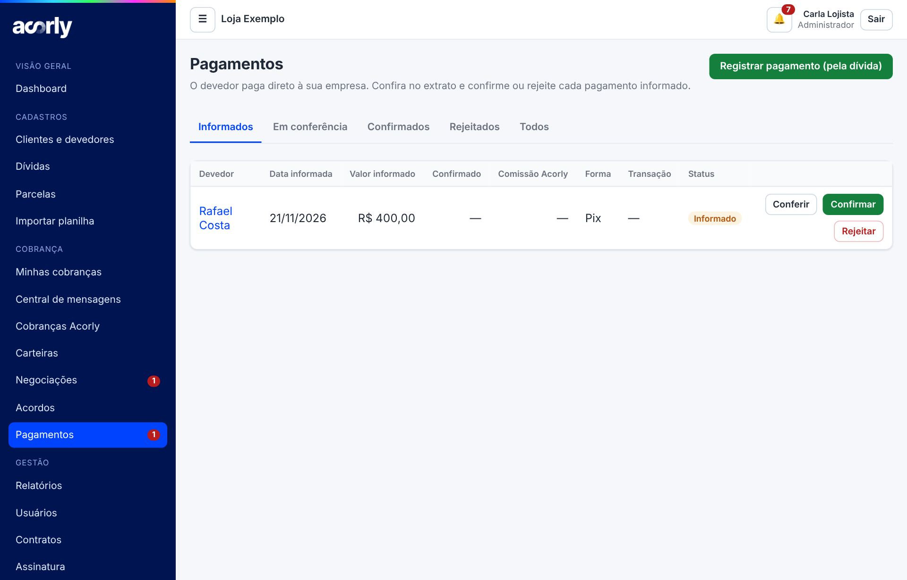
Pagamentos por situação: Informados, Em conferência, Confirmados, Rejeitados e Todos.
O comprovante sozinho não prova o pagamento. Confirme apenas valores que entraram na sua conta. Nas cobranças Acorly, a coluna Comissão Acorly mostra a comissão de cada pagamento confirmado.
18
Relatórios e prestação de contas
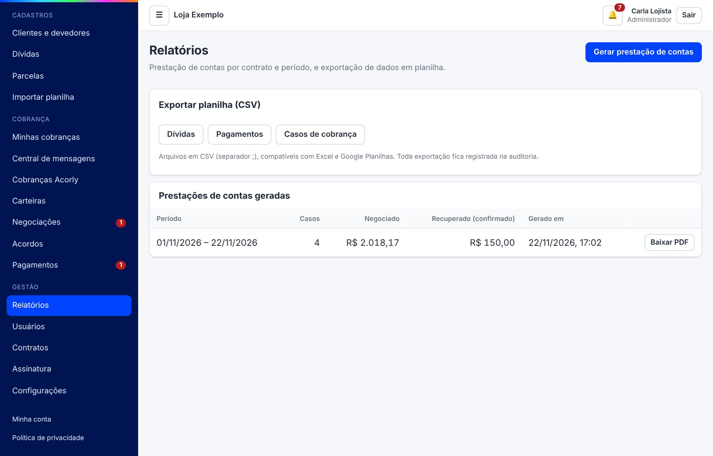
Relatórios: prestação de contas e exportação em planilha.
18.1 Prestação de contas
Clique em Relatórios e em Gerar prestação de contas.
Escolha o Contrato e o período (Início e Fim).
O relatório lista casos, valores negociados e recuperados (confirmados). Clique em Baixar PDF para guardar ou enviar à contabilidade.
18.2 Exportar planilha (CSV)
Em Exportar planilha, clique em Dívidas, Pagamentos ou Casos de cobrança para baixar os dados e abrir no Excel. A exportação está nos planos Empresarial e Ilimitado.
19
Usuários da sua empresa
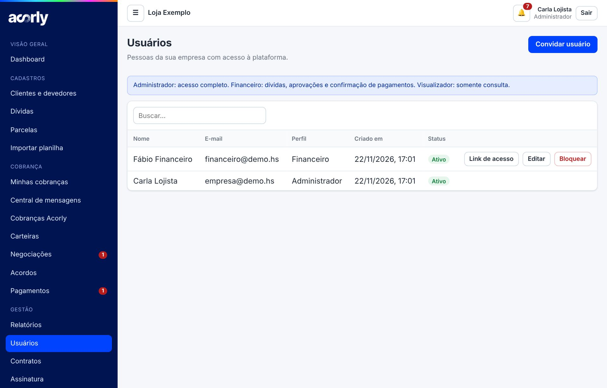
Usuários com acesso à plataforma.
19.1 Convidar um usuário
Clique em Usuários e em Convidar usuário.
Informe Nome, E-mail e Perfil (Administrador, Financeiro ou Visualizador; veja o capítulo 4).
Clique em Convidar. A pessoa recebe um e-mail para definir a senha; se o e-mail não chegar, use Link de acesso.
19.2 Outras ações
Link de acesso: gera um link para o primeiro acesso ou para quem esqueceu a senha. Envie à pessoa por um canal seguro.
Editar: muda o nome ou o perfil.
Bloquear: tira o acesso de quem saiu da empresa, sem apagar o histórico.
O número de usuários depende do plano (por exemplo, 2 no Essencial e 5 no Profissional).
20
Assinatura e planos
Em Assinatura você vê o plano atual, o valor, o vencimento, os limites e a situação. A assinatura é da plataforma; não há comissão sobre valores que a sua equipe recuperar.
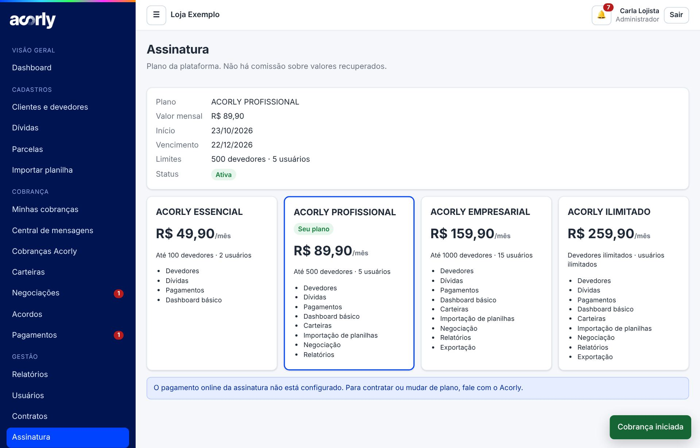
Plano atual e planos disponíveis.
Plano
Mensal
Limites
Recursos
Essencial
R$ 49,90
100 devedores · 2 usuários
Devedores, dívidas, pagamentos e dashboard
Profissional
R$ 89,90
500 devedores · 5 usuários
+ carteiras, importação, negociação e relatórios
Empresarial
R$ 159,90
1.000 devedores · 15 usuários
+ exportação
Ilimitado
R$ 259,90
ilimitados
Todos os recursos
Assinar ou mudar de plano
Clique em Assinar (ou Mudar para este plano) no plano desejado e depois em Gerar fatura.
Pague a fatura por Pix, boleto ou cartão (cobrança pelo Asaas). O plano é ativado assim que o pagamento for confirmado.
Se houver fatura em atraso, aparece o aviso com o botão Pagar agora. Depois de 5 dias de tolerância, a conta passa para somente consulta até a regularização.
Valores de novembro de 2026; confira os preços atualizados na tela Assinatura.
21
Configurações
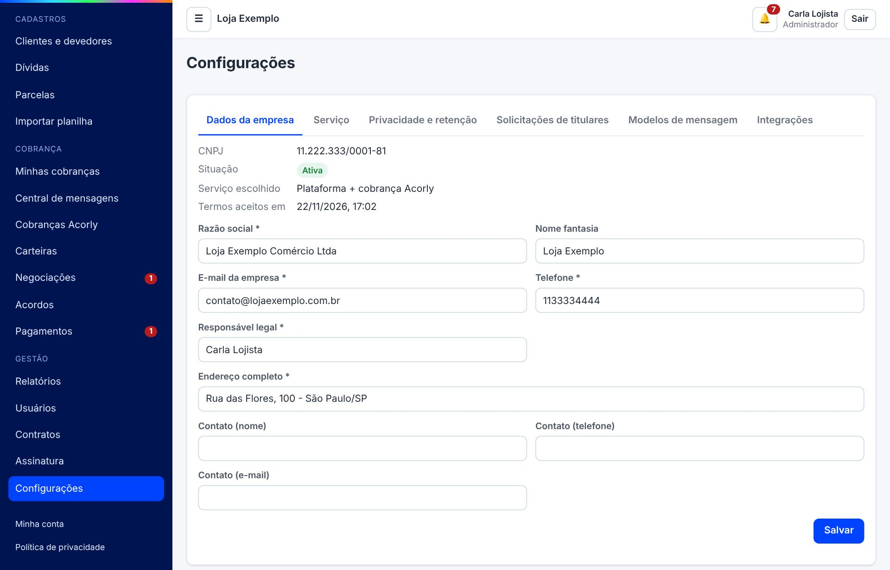
Configurações, com as abas no topo.
Aba
O que fazer
Dados da empresa
Atualize razão social, nome fantasia, e-mail, telefone, responsável legal, endereço e contato. Clique em Salvar.
Serviço
Veja e mude a forma de uso (plataforma, cobrança Acorly ou ambos). Casos já encaminhados seguem o contrato; para tirar uma dívida, use "Retirar do Acorly" na tela da dívida.
Privacidade e retenção
Defina por quantos meses os dados ficam guardados após a quitação, se é obrigatório anexar documento para encaminhar dívidas à Acorly e quem é o encarregado de dados (DPO) da sua empresa.
Solicitações de titulares
Registre pedidos de devedores sobre seus dados (acesso, correção, eliminação e outros direitos da LGPD, art. 18). Prazo de resposta: 15 dias. Use Registrar solicitação.
Modelos de mensagem
Veja e crie seus próprios modelos com Novo modelo. Use as variáveis {{nome}}, {{credor}}, {{valor}} e {{vencimento}}, que são trocadas pelos dados de cada devedor. Textos com ameaça ou exposição são recusados.
Integrações
Mostra o que está ativo: WhatsApp Business, e-mail e pagamento da assinatura. Quando o WhatsApp automático não está ativo, o envio é feito pelo link do WhatsApp, com o texto pronto.
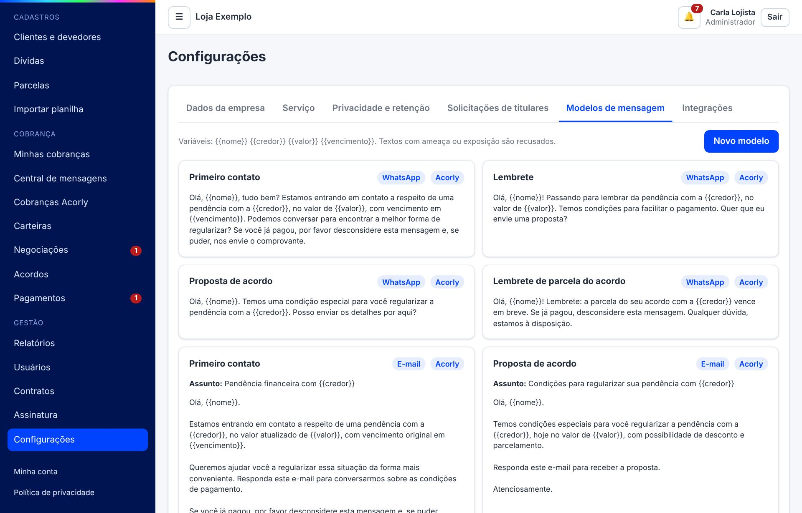
Modelos de mensagem com variáveis.22
Regras de cobrança respeitosa e LGPD
A Acorly foi feita para recuperar o seu dinheiro sem perder o seu cliente. Por isso, o próprio sistema aplica estas regras:
Contato só no horário autorizado (padrão das 8h às 20h) e no máximo 3 contatos por dia por devedor.
Mensagens com ameaça, palavras ofensivas ou exposição do devedor são bloqueadas (Código de Defesa do Consumidor, art. 42).
A cobrança é feita só com o próprio devedor: nunca com familiares, vizinhos ou colegas de trabalho.
Quem pede para não ser contatado tem o pedido respeitado na hora.
Cada empresa só vê os próprios dados. A equipe Acorly só acessa os casos que você encaminhar e autorizar.
Todas as alterações ficam registradas (quem fez, o quê e quando).
Boas práticas para a sua equipe: trate o devedor pelo nome, ofereça condições claras, registre cada contato e cada promessa de pagamento, e confirme os pagamentos no mesmo dia em que entrarem no extrato.
23
Dúvidas frequentes e atendimento
A Acorly recebe o dinheiro das dívidas?
Não. O devedor paga diretamente à sua empresa, pelos meios que você já usa. Você confirma o recebimento no sistema.
Por que o saldo da dívida não diminuiu depois do acordo?
Porque acordo não é pagamento. O saldo só cai quando você confirma cada pagamento em Pagamentos.
A mensagem do WhatsApp não foi enviada sozinha. É normal?
Sim, quando o WhatsApp automático não está ativo: o sistema abre o WhatsApp com o texto pronto e você aperta Enviar. O envio fica registrado no histórico do caso.
Posso usar a plataforma e a cobrança Acorly ao mesmo tempo?
Sim. Escolha "Quero os dois" em Configurações → Serviço: parte das dívidas você cobra, parte você encaminha.
Posso tirar uma dívida da cobrança Acorly?
Sim, pelo botão Retirar do Acorly na tela da dívida, conforme as regras do contrato.
Um devedor pediu para não ser mais contatado. O que faço?
Abra o devedor em Clientes e devedores e clique em Registrar pedido de não contato. O sistema bloqueia novos contatos com ele.
Esqueci a senha e o e-mail de redefinição não chegou.
Confira a caixa de spam. Se ainda assim não chegar, peça ao administrador da sua empresa um Link de acesso em Usuários, ou fale com a Acorly.
Atendimento
E-mail: contato@acorly.com.br
WhatsApp: (71) 92005-4062
Site: acorly.com.br · Termos de Uso e Política de Privacidade no rodapé do site.
Acorly · uma plataforma da HS Recuperação de Crédito · CNPJ 37.573.934/0001-22 · Salvador/BA.